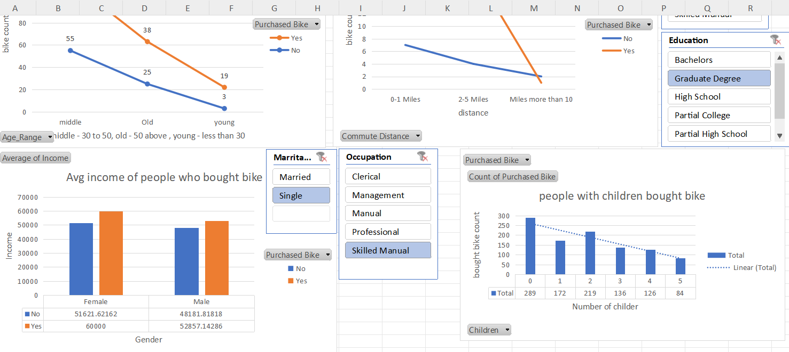
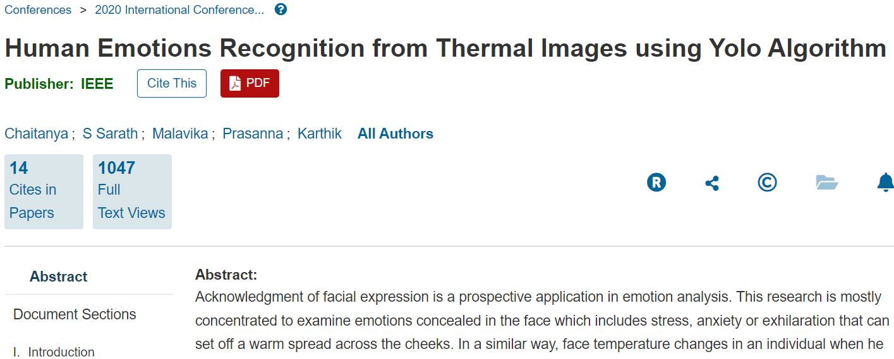

August 25, 2024
In this project, I focused on cleaning and analyzing a dataset related to corporate layoffs. The process involved using SQL to handle missing data, remove duplicates, and standardize date formats. After cleaning the data, I conducted exploratory data analysis (EDA) to identify trends and insights, such as layoff patterns by industry, company size, and geographic location. Using various SQL functions such as GROUP BY, JOIN, and HAVING, I was able to summarize the data and generate insights that could help stakeholders understand the factors influencing corporate layoffs. This project highlights my proficiency in data cleaning, SQL queries, and deriving actionable insights from complex datasets.

In this project, I used Excel to clean and analyze a bicycle buyers dataset.
Key tasks included addressing missing values, correcting data inconsistencies,
and standardizing formats. I then created pivot tables and interactive dashboards
with dynamic graphs to analyze how distance, the presence of children, and income levels
affect bicycle purchasing trends. The dashboards provided clear visual insights and allowed
users to interactively explore data patterns, showcasing my skills in data cleaning,
analysis, and visualization using Excel.

In this project, I utilized Tableau to analyze Airbnb sales data and uncover factors influencing sales performance. I focused on exploring relationships between various columns, such as regions, pin codes, and prices, to identify key drivers of sales. By creating diverse visualizations—including heat maps, scatter plots, and bar charts—I highlighted trends and patterns across different regions and price points.

Acknowledgment of facial expression is a prospective application in emotion analysis. This research is mostly concentrated to examine emotions concealed in the face which includes stress, anxiety or exhilaration that can set off a warm spread across the cheeks. In a similar way, face temperature changes in an individual when he experience different situations. The estimation of these thermal images was performed through its thermal value of pixel, not with its pixel's intensity value. Regions of interest were obtained through image processing methods, which include segmenting out the subject from its background. Despite countless readily available strategies for acknowledgment of human emotions, efficiency, robustness, and accuracy can be enhanced by integrating one modality with various others and they are based on visual facial expressions, thermal face imaging, and anatomical parameters. This paper checks out the strong point and also shortages of the currently offered emotion recognition systems based on faces, face thermal imaging and also physiological criteria.